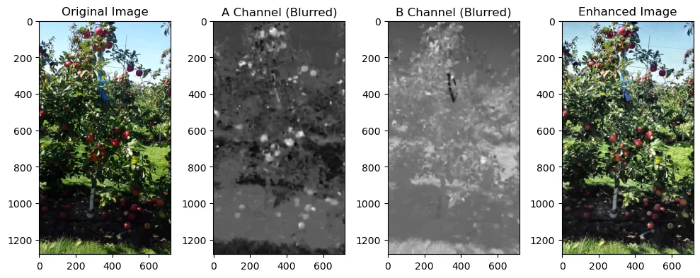

Machine vision
Detecting and counting apples in orchard imagery
Yield estimation from orchard imagery, treated as three connected problems: find the apples, count them, and separate the ones that are touching.

Why it is not just detection
A single apple is an easy detection target, but an orchard scene is much harder. The difficulties are structural: fruit hangs in clusters where the boundary between two apples is a soft edge rather than a hard one, foliage occludes most of the crop most of the time, and the same variety photographs completely differently depending on where the sun is. Windfall on the ground looks identical to fruit on the tree and must not be counted.
Counting compounds this. Individually small detection errors accumulate into the yield figure, so a model that looks respectable on a per-image metric can still be well out on the total.

What I built
- Training and prediction pipelines for both Faster R-CNN and YOLO against the same dataset, so the comparison is about the architecture rather than the data handling.
- A colour-space preprocessing stage in LAB, used both as an input enhancement and as a non-learned baseline worth beating.
- Separate evaluation for detection, counting and segmentation, because they fail in different ways and a single mAP number hides that.
- A conversion step from polygon annotations to instance masks, which was most of the unglamorous work.
What it showed
The two architectures trade off in the way the literature suggests, with the single-stage detector faster and the two-stage one better on the small and partially occluded fruit that make up the difficult tail of the dataset. For yield estimation that tail is where most of the counting error comes from, so accuracy is worth more here than throughput.
← All projects